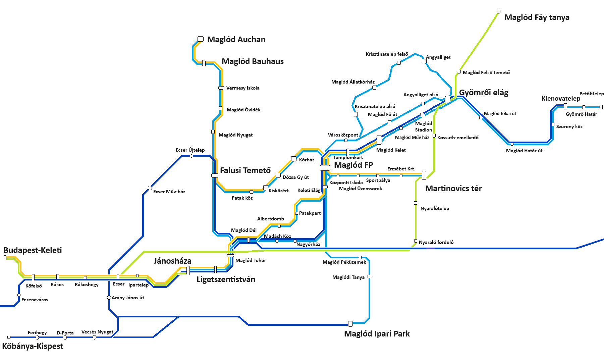
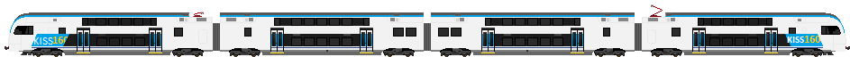

Ez az oldal a Jánosháza-Ligetszentistván vasútvonalat birtokló: JL-START.ZRT hivatalos oldala. A legfrissebb hírekről, valamint adatokról a leghamarabb tájékoztatást adunk önöknek.
Online Jegyvásárlás - kattintson az alábbi gombra!

A STADLER FLOTTA
STADLER Smile
STADLER Kiss 200
STADLER Flirt 160
STADLER Kiss 160

STADLER Euro 6000
STADLER Carriage
A vonatösszevonás mestersége
Maglód Falusi Temető állomáson a délutáni órákban a Kőbánya InterCity és S63-as személyvonatot összevonják, ennek a menetét mutatjuk most be.
Például az első ilyen alkalom 14 órakor van 13 óra 38-kor beérkezik az S63-as vonat amiről leáll a mozdony és egy tolatómozdony csatlakozik rá, ezután kihúzza a túloldalon lévő Jánosháza irányába levő állomására ahol az utasok felszállhatnak 13 óra 45-től
az idézőjeles indulás 14:05-kor a szerelvényt kihúzzák a tárolóvágányra, majd 14:07-kor beérkezik az InterCity, a személyvonatot rátolják az IC-re és óra 10-kor egyesítve elindul
Pályázati kiírás
Itt várjuk a cégek jelentkezését a beruházásokra
41-es vasútvonal (Jánosháza-Maglód ófalu) villamosításqa:
42-es vasútvonal (Ligetszentistván-Maglód pékség) megépítése:
Munkatársakat keresünk!
Forgalom irányító, Kalauz munkaterületen. A fizetés havi bruttó 560.000 Ft. Lásd a munkaköri leírásban.
Légy te is a JL-START tagja még ma! Leghetőségek sokasága várja. Feltételek: Érettsgi, pályára alkalmas technikusi oklevéllel lehet jelentkezni munkaköreinkre. Szeretettel várunk!
Munkaköri leírás
A munkaköri leírásra ezen a linken keresztül lehet megtekinteni.
Új Személykocsi változat!
Az új kocsi: nevén Ahv 20-05 prototípus készült el ma délután.
Egy Bhv kocsi lett felújítva első osztályúvá. Új ajtókat, ablakokaT
klímaberendezést kapott. Arculata egy sárga csíkkal bővült
ami az első osztályú kocsit szimbolizálja. A kocsit holnaptól
egyes S40-es személyvonatokon láthatják.